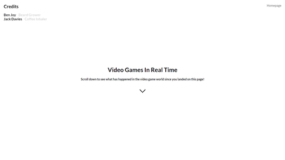
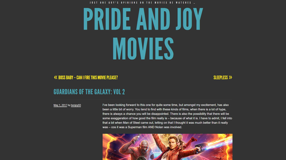

Home
Side Projects
Blog
Side Projects.
Sometimes I like to work on something different.
realtimegames.today
A website showimg real-time stats from the video game industry

prideandjoymovies.wordpress.com
My personal movie blog
